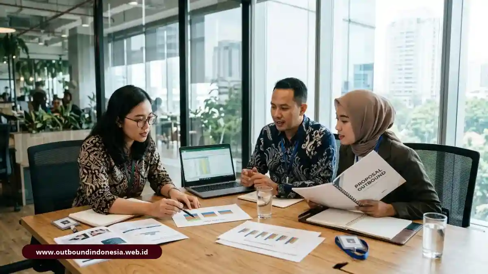

Daftar vendor outbound di Indonesia mencakup penyedia di Jabodetabek, Jawa Barat, Jawa Tengah, dan Yogyakarta, dengan spesialisasi berbeda mulai dari team building, rafting, hingga pengembangan manajerial.
Pilih vendor berdasarkan legalitas badan usaha, sertifikasi fasilitator, standar keselamatan, dan transparansi biaya, bukan hanya harga paket.
Apa Itu Vendor Outbound dan Siapa yang Membutuhkannya?
Vendor outbound adalah penyedia jasa yang merancang dan memfasilitasi kegiatan luar ruang untuk perusahaan, dari rekreasi hingga pelatihan perilaku kerja.
Pengguna utama sistem ini mencakup departemen Sumber Daya Manusia, tim Pembelajaran dan Pengembangan, divisi Pengadaan, serta panitia penyelenggara acara korporat.
Kegiatan yang ditawarkan sangat beragam. Ada vendor yang berfokus pada hiburan dan kebersamaan, ada yang menjual pelatihan dengan target kompetensi. Perbedaan ini menentukan format acara, kualifikasi fasilitator, dan cara mengukur hasil.
Perusahaan yang memahami tujuannya sejak awal akan lebih mudah menyaring vendor yang relevan. Batasan penting: tidak semua kegiatan luar ruang otomatis menjadi pelatihan. Aktivitas tanpa sesi refleksi terstruktur lebih tepat disebut rekreasi atau team building dasar, dan itu sah selama sesuai tujuan perusahaan.
Mengapa Pemilihan Vendor Outbound Sangat Krusial bagi Perusahaan?
Vendor outbound memengaruhi tiga hal sekaligus: keselamatan peserta, efisiensi anggaran, dan kemungkinan pelatihan menghasilkan perubahan perilaku yang bisa diukur.
Dari sisi keselamatan, kegiatan seperti rafting, jungle survival, dan offroad membawa risiko fisik nyata. Vendor tanpa prosedur inspeksi peralatan, tim medis, dan asuransi dapat menimbulkan kerugian bagi peserta maupun reputasi perusahaan.
Dari sisi anggaran, penawaran yang tampak murah sering tidak memuat komponen tertentu, sehingga biaya tambahan muncul saat acara berjalan. Dari sisi hasil, program yang tidak berangkat dari kebutuhan peserta cenderung berhenti sebagai pengalaman menyenangkan tanpa dampak di kantor.
Apa Saja 5 Kriteria Utama Memilih Vendor Outbound Profesional?
Lima kriteria utamanya adalah legalitas badan usaha, sertifikasi dan kompetensi fasilitator, sistem keselamatan, fleksibilitas program berbasis analisis kebutuhan, serta transparansi harga:
- Legalitas badan usaha: Vendor berbadan hukum PT atau CV dapat menerbitkan invoice resmi, faktur pajak, dan kontrak kerja yang dibutuhkan divisi Finance dan Procurement.
- Sertifikasi fasilitator: Rujukannya meliputi sertifikasi Asosiasi Experiential Learning Indonesia (AELI), BNSP, dan SKKNI Nomor 119 Tahun 2024 bidang Experiential Learning.
- Sistem keselamatan: Periksa inspeksi peralatan, pemandu bersertifikat untuk aktivitas air, tim medis atau P3K, jalur evakuasi, dan asuransi.
- Program berbasis Training Need Analysis (TNA): Vendor yang baik menyesuaikan materi dengan kesenjangan kompetensi, bukan menjual paket seragam.
- Transparansi biaya: Penawaran memisahkan sewa lokasi, konsumsi, akomodasi, peralatan, dan asuransi.
Standar kompetensi nasional tersebut juga didorong pemerintah untuk menekan angka kecelakaan di lapangan. Informasi lembaga sertifikasi dapat dicek di situs resmi BNSP.
Bagaimana Perbandingan Vendor Outbound di Indonesia?
Delapan vendor berikut dapat dibandingkan berdasarkan wilayah, legalitas yang tercatat, ciri khas, dan jenis program utamanya:
| Vendor | Wilayah | Legalitas / Pengalaman | Ciri Khas | Program Utama |
|---|---|---|---|---|
| Duage Management | Jakarta (Duren Sawit) | PT Duage Manajemen Indonesia, pengalaman > 12 tahun | FEAT Framework (team cohesiveness & team effectiveness) | Team activities, team activation, team training |
| Dunia Outbound | Tangerang Selatan | PT Cantigi Anawidri Indonesia, berdiri sejak 2003 | Outdoor Based Management Training | Jungle survival, rafting, outing |
| Bellva Adventure Indonesia | Bandung / Lembang | Profil usaha tercatat | Mengaitkan outbound dengan konsep 70:20:10 | Gathering, MICE, team building, offroad, rafting |
| BoundEx Indonesia | Bogor / Puncak | Berdiri sejak 2020 | Experiential learning dan debriefing | Outbound training, OMD |
| Oase Indonesia | Semarang | CV Oase Indonesia Madani, pengalaman > 15 tahun | TNA dan sertifikasi BNSP | Outbound, pelatihan, program lintas provinsi |
| Jelajah Outbound | Semarang / Kendal | Pengalaman lebih dari 15 tahun | Master Trainer C.NLP, asuransi jiwa | Outbound, river tubing |
| Indonesia Outbound | Jakarta Pusat | PT Awan Patra Nusantara, memiliki NIB | Paket di banyak lokasi sungai dan wisata | Outbound dan rafting |
| Indo Outbound | Kaliurang, Yogyakarta | Profil usaha tercatat | Lava Tour Merapi | Outdoor training, rafting, paintball |
Catatan: Tabel ini bukan peringkat. Setiap vendor unggul pada konteks tertentu, dan kecocokan dengan tujuan acara tetap menjadi penentu utama.

Tim HRD mengevaluasi proposal vendor outbound perusahaan secara objektifVendor Outbound Mana yang Tersedia di Setiap Wilayah?
Pilihan vendor mengikuti geografi: Jabodetabek untuk akses cepat dari kantor, Jawa Barat untuk lanskap pegunungan, serta Jawa Tengah dan Yogyakarta untuk adventure dan budaya.
Jakarta dan Jabodetabek
Duage Management berkantor di Duren Sawit, Jakarta Timur, dan melayani kegiatan di Jakarta, TMII, Bogor, dan Puncak.
Dunia Outbound berbasis di Ciputat, Tangerang Selatan, dengan area kerja Jabodetabek, Puncak, Anyer, dan Sukabumi.
Indonesia Outbound berkantor di Salemba, Jakarta Pusat, dengan destinasi Pulau Seribu, Puncak, Bogor, Sukabumi, dan Anyer.
Jawa Barat
Bellva Adventure Indonesia berpusat di Lembang dan mengelola kegiatan di Cikole, Pangalengan, Bogor, dan Sentul.
BoundEx Indonesia beroperasi dari Ciawi, Kabupaten Bogor, dengan destinasi Bogor, Puncak, dan Sentul.
Jawa Tengah dan Yogyakarta
Oase Indonesia berpusat di Tembalang, Semarang, dan melayani Jawa Tengah, Yogyakarta, hingga Jawa Timur.
Jelajah Outbound berada di Mijen, Semarang, dengan area Kendal, Bandungan, dan Gonoharjo.
Indo Outbound berpusat di Kaliurang dan mengelola Lava Tour Merapi, rafting Sungai Elo, serta pantai di Yogyakarta.
Apa Saja Macam Program Outbound yang Bisa Dipilih?
Program outbound dapat dikelompokkan menjadi delapan format, dari rekreasi ringan sampai pengembangan manajerial jangka panjang:
- Outing, untuk penyegaran dan pemulihan energi karyawan.
- Gathering, untuk membangun keakraban dan keharmonisan antaranggota.
- Team building, untuk memperkuat kepercayaan, komunikasi dasar, dan koordinasi.
- Outbound training, untuk menutup kesenjangan kompetensi dan memperbaiki perilaku kerja.
- Outdoor Management Development (OMD), untuk leadership pipeline dan internalisasi nilai perusahaan.
- Rafting dan river tubing, untuk aktivitas air dengan pemandu bersertifikat.
- Jungle survival, untuk simulasi tekanan dan pengambilan keputusan di alam.
- Petualangan offroad, paintball, dan tur lava tersedia sebagai aktivitas pelengkap yang berorientasi pada pengalaman petualangan.
Mengapa Debriefing Menentukan Nilai Sebuah Program?
Debriefing adalah sesi refleksi terstruktur yang mengubah pengalaman permainan menjadi pelajaran kerja, dan kehadirannya membedakan pelatihan dari sekadar acara.
Meta-analisis Tannenbaum dan Cerasoli menunjukkan bahwa debriefing yang terstruktur dikaitkan dengan peningkatan kinerja individu dan tim sekitar 20 hingga 25 persen. Angka ini berasal dari penelitian lintas studi, sehingga hasil di perusahaan Anda tetap dapat berbeda.
Saat membandingkan vendor, tanyakan bagaimana mereka memfasilitasi refleksi dan menghasilkan rencana tindak lanjut. Vendor yang hanya menjelaskan jumlah permainan perlu diperiksa lebih jauh.
Bagaimana Langkah Mengajukan Penawaran dan Mengevaluasi Proposal Vendor?
Prosesnya terdiri dari empat langkah praktis: tetapkan tujuan, kirim brief seragam, nilai proposal dengan skor yang sama, lalu verifikasi sebelum kontrak:
- Tetapkan tujuan dan batasan: Tuliskan jumlah peserta, tanggal, anggaran, tujuan (rekreasi, team building, atau pelatihan), dan indikator keberhasilan.
- Kirim brief yang sama ke 3 sampai 4 vendor: Brief seragam membuat penawaran bisa dibandingkan secara adil. Minta rincian biaya per komponen.
- Nilai proposal dengan lembar skor: Beri bobot pada legalitas, kompetensi fasilitator, keselamatan, kesesuaian program, dan transparansi harga.
- Verifikasi dan survei: Minta dokumen badan usaha, bukti sertifikasi, rencana evakuasi, dan referensi klien. Jika memungkinkan, kunjungi lokasi sebelum acara.
Perusahaan yang rutin mengadakan acara dapat menyiapkan daftar periksa evaluasi vendor dalam bentuk PDF yang bisa diunduh tim HRD.
Kesimpulan Praktis dan Checklist Evaluasi HRD
Pilih vendor dari kecocokan tujuan, bukti legalitas, kompetensi fasilitator, dan kejelasan rincian biaya. Daftar di atas adalah titik awal, bukan rekomendasi mutlak.
- Mulai dari tujuan acara, lalu cari vendor yang spesialisasinya sesuai.
- Pastikan legalitas PT atau CV dan dokumen penagihan resmi.
- Periksa sertifikasi fasilitator dan standar keselamatan secara tertulis.
- Minta rincian biaya per komponen untuk menghindari biaya tak terduga.
- Evaluasi dengan lembar skor yang sama bagi semua vendor.
- Konfirmasi seluruh data profil dan harga langsung kepada vendor karena dapat berubah.
Checklist Cepat Sebelum Tanda Tangan Kontrak
- Dokumen badan usaha dan NIB sudah diterima
- Bukti sertifikasi fasilitator sudah diverifikasi
- Rencana keselamatan, tim medis, dan asuransi tertulis
- Rincian biaya terpisah per komponen
- Skema debriefing dan tindak lanjut dijelaskan
- Referensi klien sudah dihubungi

Tim Outbound Indonesia
Praktisi instruktur certified BNSP, konsultan pengadaan event korporat, dan master game berpengalaman.